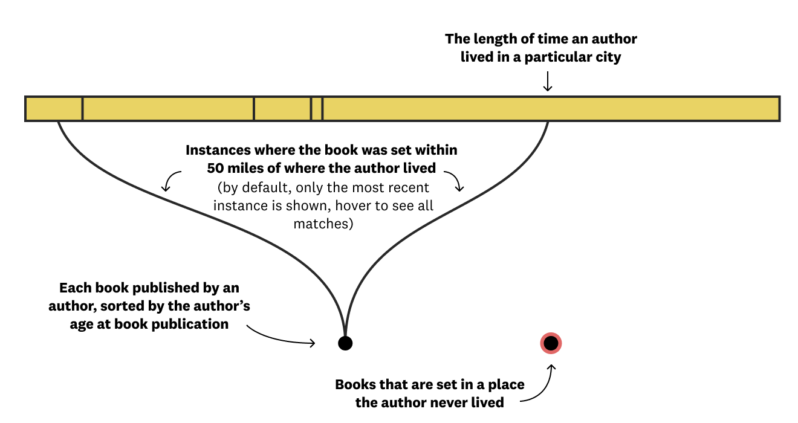
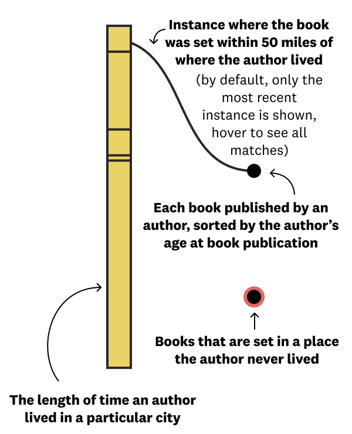

We pour our ❤️ into these stories, but they take time and money. For just $1/month, you can help support us. Join our
growing community of data-driven enthusiasts.
I had the chance to hear Zadie Smith speak at a UCLA event in 2017, at which she joked about being unable to set her work anywhere but Willesden, the north-west London neighborhood she grew up in.
Four of Smith’s five novels are partly set in or very near Willesden. The exception to this is On Beauty, which is set in Cambridge, Massachusetts. Smith was a fellow at Harvard two years prior to the publication of this novel – so where she’s lived certainly seems to impact where she sets her work.
That got me wondering: How far from a place they’ve called “home” do writers tend to set their works? The famous saying, of disputed origins, goes “Write what you know.” But do authors usually “write where they know,” like Smith?
To answer this question, we took a look at the best 100 books written since 1900. We then calculated every possible distance between book setting and author residence to find the smallest value for each book. This told us if at least part of their book was based on a place familiar to the author.
Title:
Author:
Residence(s):
Setting(s):
Distance:
Here is Smith’s debut novel, White Teeth. The nearest book setting/author residence combo is a distance of 0 miles.
On the other end of the spectrum is Roberto Bolaño’s 2666. Bolaño never visited Ciudad Juárez, Mexico, the city his novel’s Santa Teresa is based on. However, he was in frequent contact with Sergio González Rodríguez, an investigative journalist who reported extensively on the murders of women in Ciudad Juárez that form the factual bedrock of Bolaño’s novel.
Here are the rest of them. We found that 61 of the 100 books on the list are at least partly set in a place an author lived in. For the other 39 books, the median minimum distance between a setting and an author residence is only 73.7 miles.
The other notable outlier is John Updike’s Rabbit at Rest, the fourth and final book in a series that follows one man through 30 years. In the novel, protagonist Harry “Rabbit” Angstrom retires to Florida, having spent the first three books of the series in the fictional city of Brewer, Pennsylvania. Updike was a Pennsylvania native himself; Rabbit is thus a character steeped in and transplanted from a setting his creator was extremely familiar with.
Explore all top 100 books yourself.
Tk
To further understand the relationship between author residence and book setting, we took a closer look at the oeuvres of 11 authors.


Virginia Woolf
1882 - 1941
Title:
Residential Setting(s):
Non-Residential Setting(s):
Woolf lived quite a fixed life: She lived in England throughout, maintaining a London residence for most of that time. She spent her childhood summers at St. Ives in Cornwall, which inspired the setting for To The Lighthouse, one of her most acclaimed works. Most of her writing is England-centric, with only brief sojourns elsewhere. Even the ship that forms the setting for The Voyage Out is a microcosm of Edwardian London society, which Woolf was well acquainted with. For most of her career, she set her books in the present or immediate past; for example, Mrs. Dalloway, written in 1925, takes place on a single day in post-World War I London.
F. Scott Fitzgerald
1896 - 1940
Title:
Residential Setting(s):
Non-Residential Setting(s):
Fitzgerald mainly grew up on the East Coast, and it shows in his writing. His first three books are set entirely in New York and New Jersey. The fictional West Egg, which forms the setting for The Great Gatsby, is based on Great Neck, the area of Long Island he lived in for three years. His later works – like his later life – take place further afield, traveling across Europe and journeying to Los Angeles. While he never lived in the specific places that Tender Is The Night lingers in, his years spent in Europe inform the work, giving the backdrop to Dick and Nicole Diver’s story a casual specificity, one that’s evident from the novel’s very first paragraph. His penchant for using familiar settings continued through his final novel,The Last Tycoon, in which he takes on the world of Hollywood, where he spent his last few years writing film scripts.
George Orwell
1903 - 1950
Title:
Residential Setting(s):
Non-Residential Setting(s):
Orwell lived a life in transit; he rarely ever settled anywhere for over two years. Perhaps relatedly, his best works of fiction, Animal Farm and 1984, are not specifically concerned with evoking a sense of place; their preoccupations are more political. His lesser-known works, however, all explicitly draw on locations he’d lived in, as does some of his nonfiction, such as Down and Out in Paris and London and The Road To Wigan Pier.
Shirley Jackson
1916 - 1965
Title:
Residential Setting(s):
Non-Residential Setting(s):
Geographical setting isn’t something Shirley Jackson’s best work much concerns itself with. Her books are in the tradition of Gothic horror, which places utmost importance on the structure in which the action unfolds: The genre was in fact named for its sinister settings’ style of architecture. Jackson’s modern Gothic novels intimately acquaint readers with the layouts and quirks of the buildings at their centers, such as the Vermont estate of We Have Always Lived in the Castle and the titular Hill House. But these buildings could, for the most part, be anywhere, because the action takes place in the protagonist’s psyche.
J. D. Salinger
1919 - 2010
Title:
Residential Setting(s):
Non-Residential Setting(s):
Salinger is a New York City writer, through and through. He grew up in Manhattan, spending a good amount of his adult life in the city as well. His literary career hit its stride when he was first published in the New Yorker, to which he then onward frequently contributed. Most of his stories and novellas follow the fictional Glass family, who reside in Manhattan’s Upper East Side. While his ubiquitous book, The Catcher in the Rye ventures beyond NYC to a school based on one he briefly attended in Wayne, PA, as well as fleetingly to Los Angeles, it’s clear that New York shaped and formed the backdrop of most of his published creative output.
Toni Morrison
1931 - 2019
Title:
Residential Setting(s):
Non-Residential Setting(s):
Morrison set her first novel in Lorain, OH, where she grew up. “I am from the Midwest, so I have a special affection for it. … No matter what I write, I begin there,” she said in a 1983 interview. However, many of her narratives unfold in places she never lived. This is likely because, more than mining her specific experiences for her work, Morrison explored and cataloged the African-American experience – fundamentally reshaping the canon of black literature as she did so. In the same interview, she adds, “Ohio offers an escape from stereotyped black settings. It is neither plantation nor ghetto.” When she chose Ohio as a setting, she did so not only for her familiarity with the place, but also for its ability to aid her in liberating black characters from contexts they had long been confined to.
Kazuo Ishiguro
1954 - present
Title:
Residential Setting(s):
Non-Residential Setting(s):
Ishiguro’s family immigrated to Britain from Japan when he was only five years old. In his wonderful 2017 Nobel lecture, he outlines his experiences grappling with his identity in relation to his geocultural roots, both as a child and an adult. He cites as a pivotal moment in his literary career the night he found himself “writing, with a new and urgent intensity, about Japan” after a few weeks of attempting to set a story in Britain. That night sparked a journey that would turn into his first novel A Pale View of Hills. The book, he says, was his way of preserving a Japan that was borne of and existed only in his mind, “to which (he) in some way belonged, and from which (his) drew a certain sense of (his) identity.”
Khaled Hosseini
1965 - present
Title:
Residential Setting(s):
Non-Residential Setting(s):
Hosseini’s stories and characters are greatly shaped by his own experience of immigration. Two of his three books travel the same path he did, from Kabul to California. And the Mountains Echoed even makes a stop in Paris, where his family spent four years waiting for unrest in Afghanistan to pass. Their eventual inability to return brought about their seeking political asylum in the U.S. and moving to San Jose. Hosseini’s repeated literary traversal of this path brings out how pivotal this prolonged experience of unsettlement and immigration was to his life and worldview.
Zadie Smith
1975 - present
Title:
Residential Setting(s):
Non-Residential Setting(s):
As we’ve already seen, Smith’s creative output is very influenced by where she’s lived. At the 2017 event I mentioned earlier, she said she was working on a novel set 150 years in the past ... but still based in Willesden. I can’t wait to read that book.
Celeste Ng
1980 - present
Title:
Residential Setting(s):
Non-Residential Setting(s):
Ng’s two novels take place in Ohio, where she spent eight years of her childhood. Her second book, Little Fires Everywhere all the more specifically unfolds in Shaker Heights, OH, the city she lived in. Analyzing the work of two early-career writers – Ng and Sally Rooney – highlighted to me how likely writers’ earliest works are to draw on childhood abodes. Almost every writer on this list set their earliest work where they grew up – even Shirley Jackson, who pretty much abandoned geographically locating her novels halfway through her literary career.
Sally Rooney
1991 - present
Title:
Residential Setting(s):
Non-Residential Setting(s):
Rooney is kind of a big deal, both in literary circles and beyond, these days. Her two novels resonate world over because they’re about interpersonal relationships and emotional intimacy. It can only help that they’re set in locations Rooney is intimately familiar with – Dublin and County Sligo, Ireland.
Data and Method
We used The Greatest Books, a best-of list aggregator, to select the 100 books we analyze setting/residence combinations for. In addition to being written after 1900, all the books we look at are novels, specify their setting and are set in real places on Earth. The data collection process was largely manual.
We used the Haversine formula to calculate distances for each setting/residence combination, visualizing the smallest value for each book. Where book setting was unspecific – not city-level – we used the centroid of the state/country in question to calculate these distances.
Data was manually collected for the individual author charts as well. I chose well-known English-language writers whose lives and work I knew about, approximately picking one born in each decade since the 1880s.
For these individual charts, if a setting and residence are exact matches, the chart only highlights time periods during which the author lived in this place. If a setting is within 50 miles of two or more author residences, the chart highlights all these residences. To avoid overgeneralization, if a setting was country-level, we did not match it to any author residence, not even if the residence was within that country.